Yahoo!かんたんカレンダー
現在の「Yahoo!カレンダー」の原型。ドラッグ&ドロップで予定の追加・変更の操作ができることや紙の手帳のような体験が大きな特徴のプロダクトです。UI/UX全体の方向性を定め、サービスの基礎となるデザインと体験設計をリードしました。
Team
Timeline
2014年10月 - 2015年4月
背景
当時、キャリアのプレミアム会員の満足度向上と継続利用を目的として立ち上げられた「かんたんシリーズ」ブランドのアプリがあり、そのうちの一つとして開発されました。当時、本アプリの制作を担当したライフツール部は、Yahoo!が買収したベンチャー企業「コミュニティファクトリー」を前身としており、若年女性向けカレンダーアプリでヒット作を生んだ知見を有する組織でした。
プロジェクトについて
コミュニティファクトリーのヒットアプリ「ペタッとカレンダー」のスタンプ登録の簡単さであったり、「コレットカレンダー」の色分けした見やすさなどの若年層にヒットした要素を踏まえつつ、別の層（その時点の暫定ターゲットは20〜30代男性）を獲得するためのアプリ開発が始動。「予定管理をカンタンで楽しく」をキーフレーズに、紙の手帳の体験価値とスマートフォンの利便性を両立する体験を目指しました。
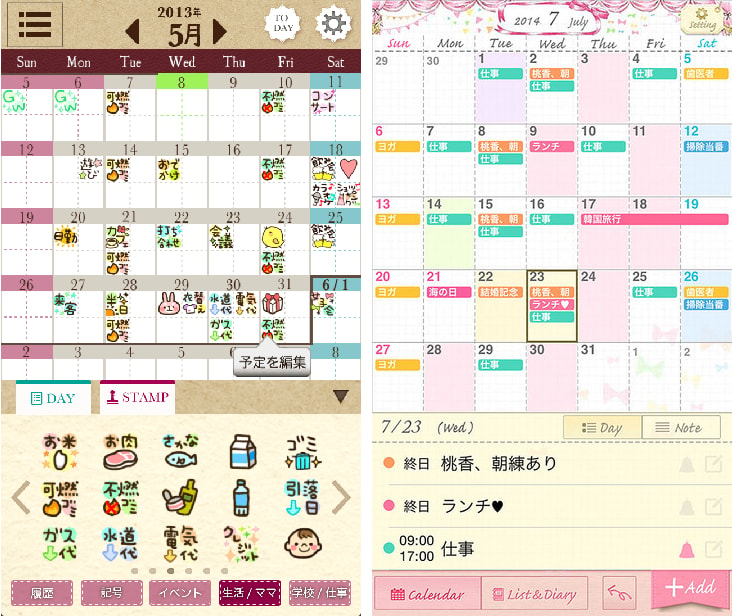
左：ペタッとカレンダー、右：コレットカレンダー
担当フェーズ
アクション
競合調査
カレンダー、リマインダー、Todoアプリを100個ダウンロードし、実際に利用した上で、参考にすべき優れた表現やUIパターンを抽出しました。 競合カレンダーの「新規追加」「日付変更」「日時入力」操作が簡単かつ完了までの時間が短いUIや、文字サイズ・色などの表現が見やすいUIなど、優れたUIのお手本となるもの（※）は、後のUI設計フェーズで活かされていきます。
初期仮説〜定性調査
「予定管理の課題が高い20〜30代男性」 ・課題：予定の入力が面倒（特に片手操作） ・仮説：スタンプによる手軽な操作で予定入力できる（だから課題を解決できるはず） 主に「スタンプによる予定登録」についての仮説が確認できるプロトタイプを作成し、暫定ターゲットである20〜30代の男性ユーザー6名を対象にインタビューを実施。期待値に沿った行動をするか検証しました。
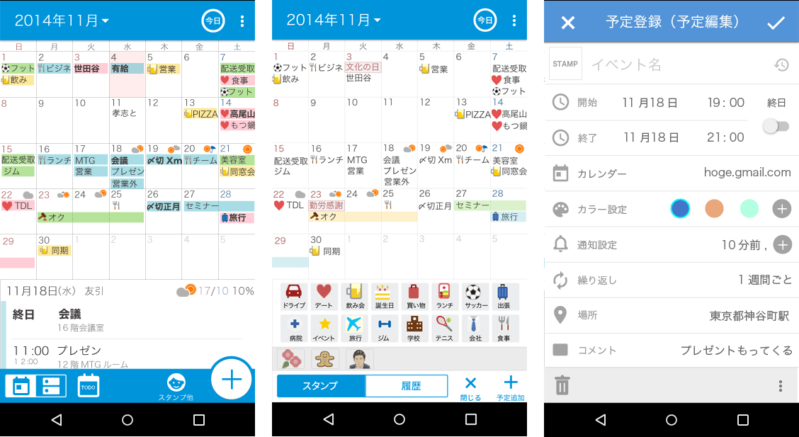
定性調査用UI
定性調査のインタビュー内容（Aさん（20代男性）
| シナリオ1 | シナリオ2 | シナリオ3 | |
|---|---|---|---|
| 内容 | あなたは友だちと遊ぶ約束をしていて、12月13日 12:00 からその予定が入りました。予定をカレンダーに入力したい状況です。 | あなたは先日、友達とSNSでやり取りした12月10日の飲み会の予定のことを思い出しました。今は電車で移動中で、できるだけ簡単・すばやく予定をカレンダーに入力したい状況です。 | あなたは忙しい平日を過ごしていて、週末の予定を確認しようとしています。カレンダーで今週末の予定を確認したい状況です。 |
| 期待する行動 | スムーズに予定入力が行える | スタンプを使って予定を入力する | スムーズに予定確認を行える |
| 実際の行動 | ［＋］ボタンから新規作成画面に行き、予定名を入れた。時刻入力で操作の手が少し止まったが、タスクを完了した。 | ［＋］ボタンから新規作成画面に行き「飲み会」と入力し、タスクを完了した。 | 月グリットビューから今週末のセルをタップしたら下に予定一覧が出たので確認して、タスクを完了した |
| 期待値の達成 | △ | × | ◯ |
| 思考発話 | 終了時間が読めない予定だったので困ってしまった。 | 移動中はやりたくない操作（スタンプ機能には気づいていない） | 月グリットビューだと、予定の詳細まではわからない。 |
| 課題 | UXの課題 多様な予定パターンを考慮できていない。 |
認知の課題（認知バイアス） スタンプは独自性が高い機能。予想外の機能は無意識に無視される。 |
UIの課題 情報量とスペースのアンバランス。 |
| 解決策 | 終了時刻を省略しやすいUIや挙動にする。 | 初回でレクチャーする。 メインとなる導線（予定追加画面）のスタンプ機能を目立たせて、認知向上をはかる。 |
下ペインに今日の予定を出すUIの方向性は◯。 予定の詳細情報のうち、価値がある情報は可能な限り表示する。 |
結果、「スタンプによる予定登録」については、スタンプ機能の存在自体が認知されないという課題が明らかになり、操作以前の段階でつまずいていることが分かりました。また、カレンダーの基本である「予定の確認・登録」についても、ユースケースを網羅しなければ、使い勝手の悪い体験になってしまうことが判明しました。
なぜうまくいかなかったか？〜ターゲットの再定義
定性調査での仮説のつまづきから、「ペタッとカレンダー」成功の構造をあらためて確認しました。予定管理の課題に際し、「予定を視覚的に管理したい」「予定管理に感情的な満足を得たい」潜在ニーズを合わせ持つ「若い女性」という属性を掛け合わせたことでヒットしました。 一方で、プロトタイプ検証時の被験者は、予定管理の課題×「20〜30代男性」という属性のみで、潜在ニーズが十分に定義されていない設定でした。 その結果、体験の価値が伝わらないどころか認知にも至らず、仮説通りの結果を得ることができませんでした。 そこでターゲットを見直し、「予定を視覚的に管理したい」、「予定管理に感情的な満足を得たい」潜在ニーズを持つ、「20〜50代の男女」へと再定義しました。 あわせて、幅広いターゲットに対応できるよう、デザインを個別最適できる要件を追加し、「ペタッと」のように特定の層に寄せるのではなく、より間口を広げた方向性へと転換しました。
コンセプトワーク
再定義したターゲットにとってのカレンダーの良質な体験とは、予定の視認性や満足度を何らかの形で高めることにあり、これは紙のカレンダーですでに実現されている体験でもありました。 「ペタッと」でヒットしたスタンプによる予定登録も、その体験に近づけることで成功を収めたものであったため、「紙の手帳に触る体験」をさらに深掘りすることでニーズを満たせると考えました。 そこで、横スワイプでページをめくる操作感、蛍光マーカーで色を引くような予定カラー、手帳カバーを選ぶような着せかえテーマ機能を要件定義しました。 紙のカレンダーの擬似体験を目標に、再定義したターゲットに向けてコンセプトを整理していきました。
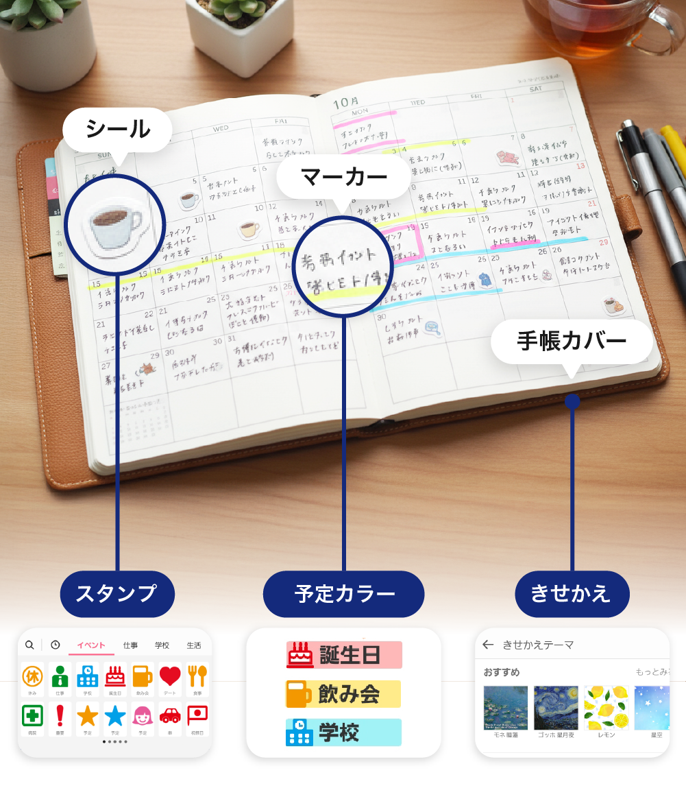
UI設計
細かな機能の要件定義を行いつつフローチャートやUI設計を実施。主要な画面は、UI要素ごとに複数のパターンを検討（右図）。予定追加画面などは、競合アプリの良いUIを参考に、良い点を足し合わせたり、改善を加える形で検討を進めました（競合調査-時間入力の例）。デイリーにチーム内レビューを行い、UI設計を進めました。
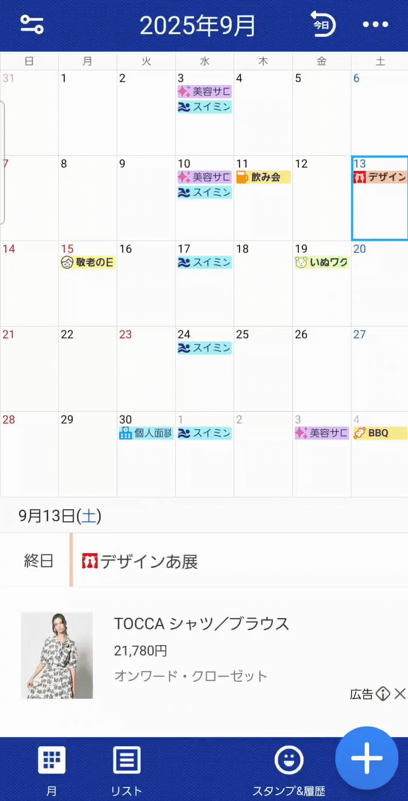
横スワイプ操作の月送りは紙の手帳の体験。2ペインビューで予定の概要が見え、かつスタンプUIも使いやすい設計とした。
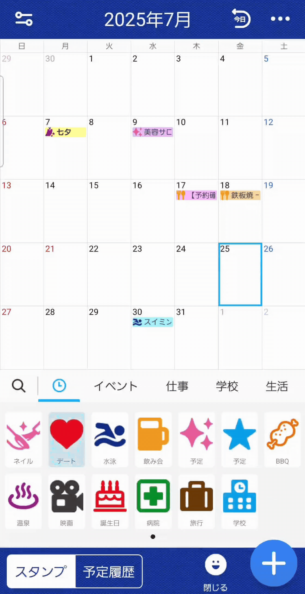
ドラッグ&ドロップでのスタンプ入力がしやすいか・編集がしやすいかを入念に確認した。
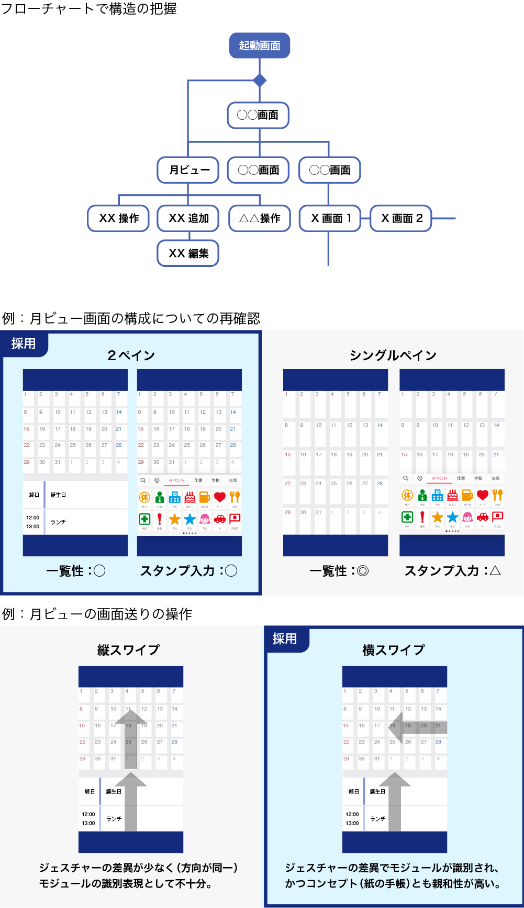
各画面
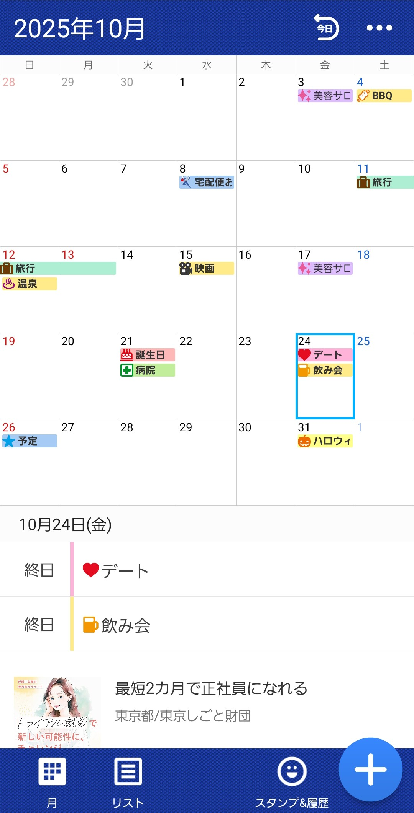
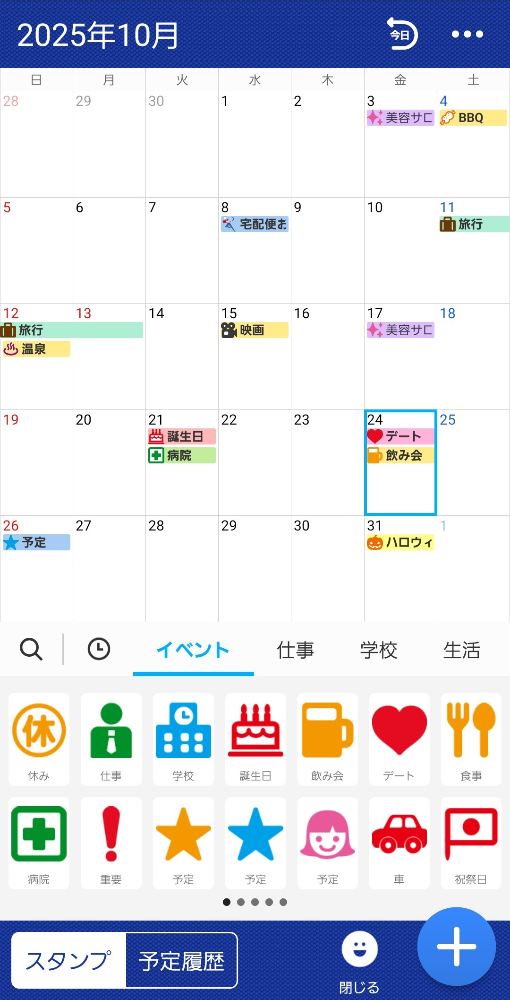
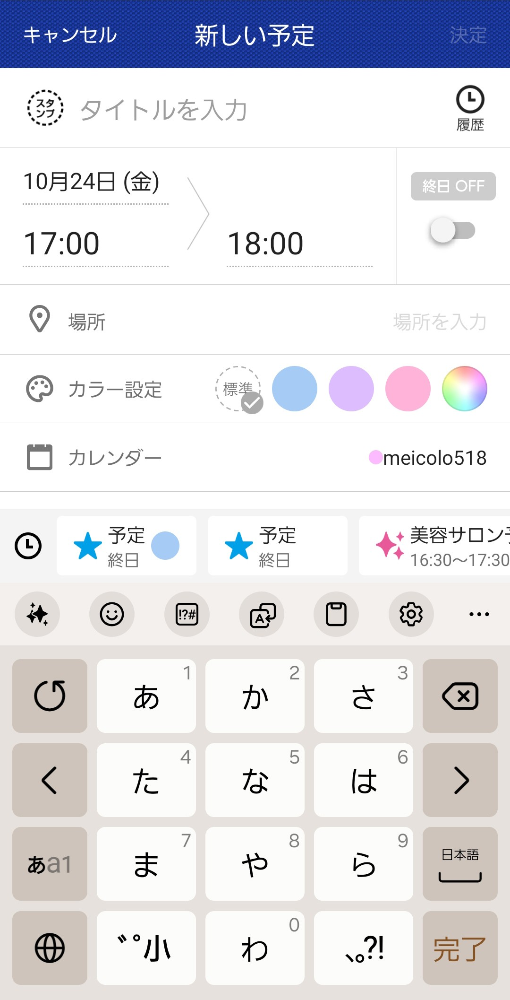
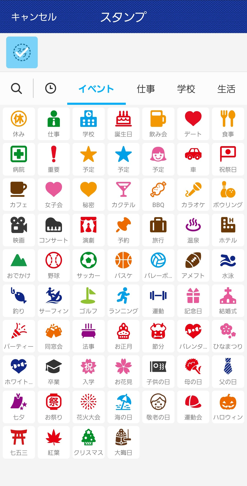
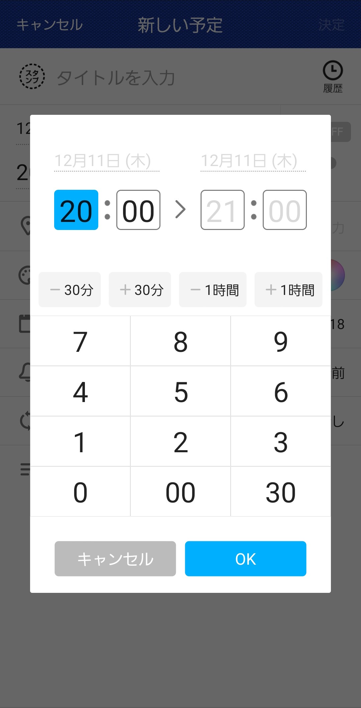
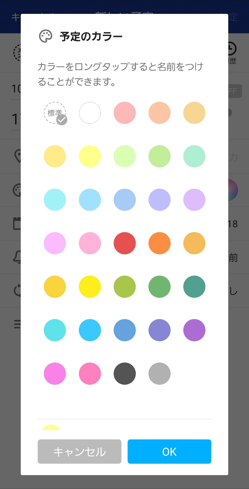
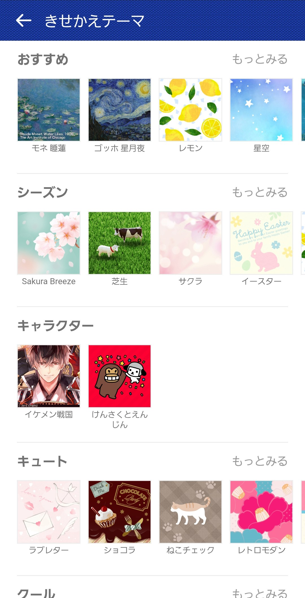
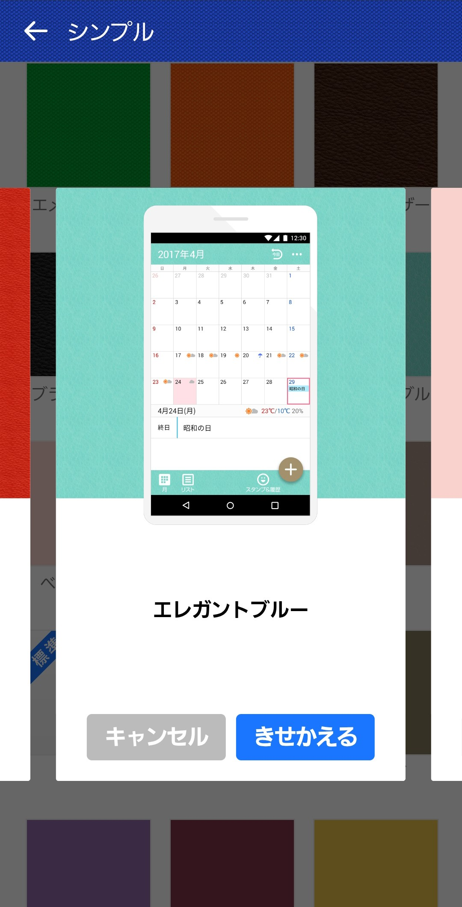
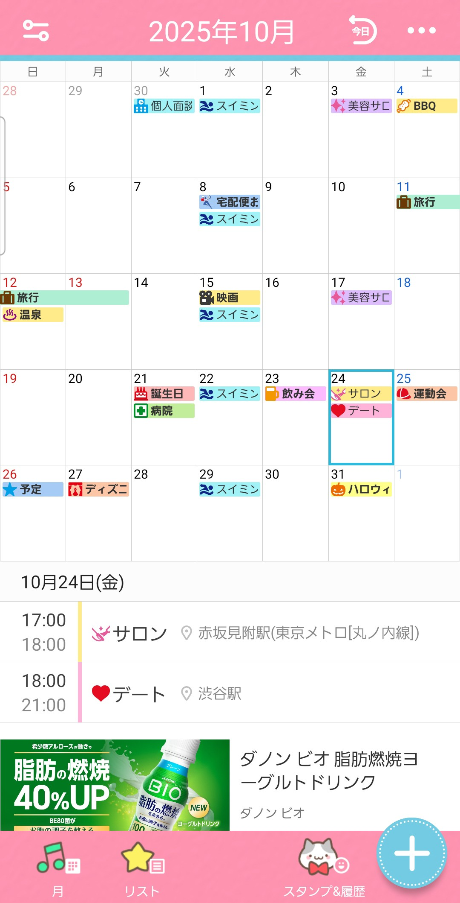
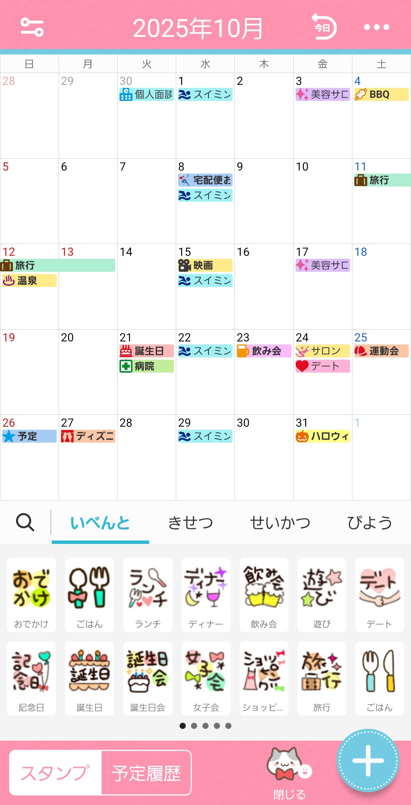
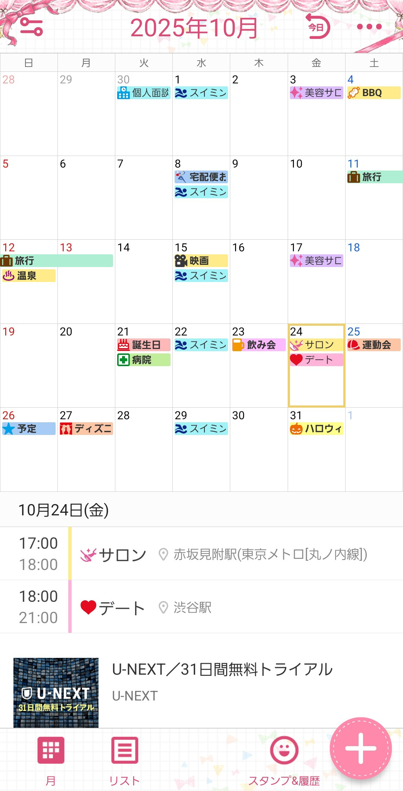
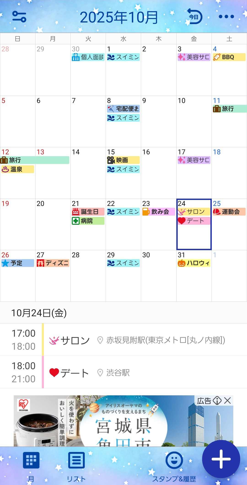
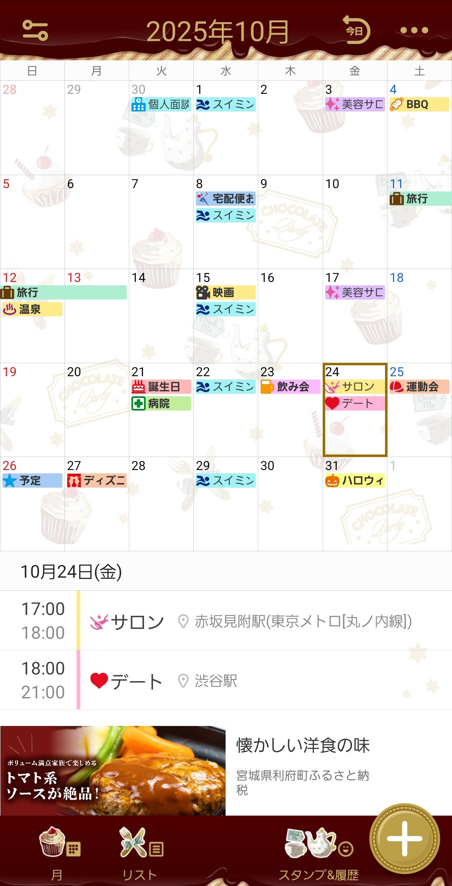
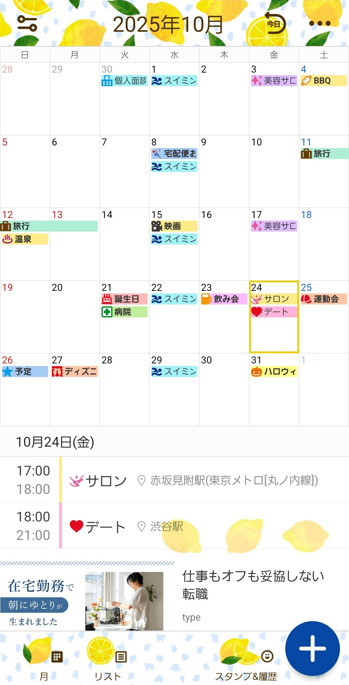
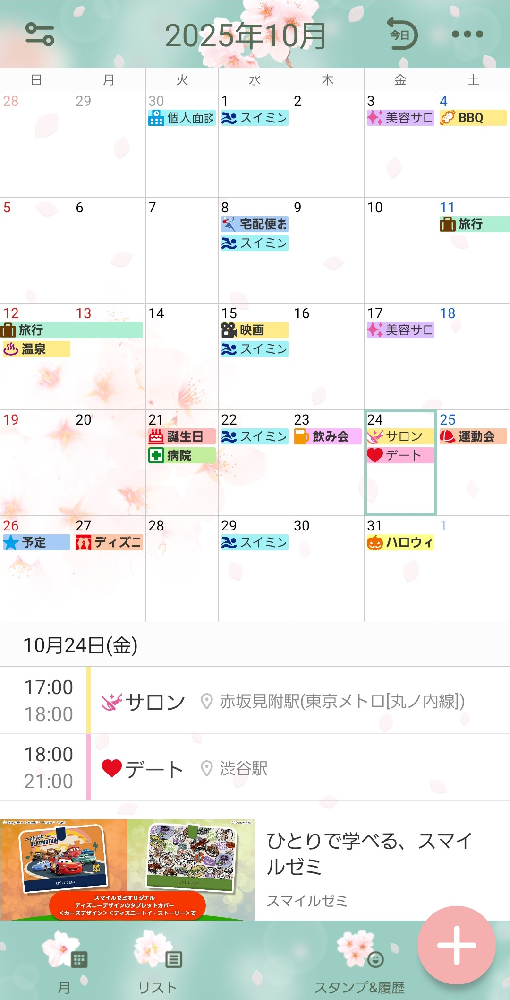
成果や実績
- • 2015年7月にApp Storeの「仕事効率化」カテゴリで一位を獲得
- • ユーザーレビューで「使いやすい」「シンプルで見やすい」といったUIに関するポジティブなフィードバックがリリース当初から多く寄せられ、様々なメディアにも掲載されました。
- • 社内アワードを受賞し、新規サービス開発におけるデザインプロセスのプラクティスとして参照されました。